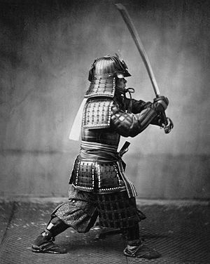

Определение
 Многие наверняка знают, кто такие самураи и слышали о них. Для тех же, кто не в курсе, мы напомним, что в прошлые века словом «самурай» в Японии назывались светские феодалы и мелкие дворяне, относящиеся к феодальному сословию. Также были люди, которых называли «буси» — они были воинами. Но слова «самурай» и «буси» очень близки по своему значению и нередко считаются равнозначными, хотя это не и совсем правильно. Несмотря на это мы не станем делать между ними разницы, и будем рассматривать самураев именно как воинов. Так вот, самураи были воинами, превосходно владеющими мастерством ведения боя. Их функцией было защищать своего господина (сюзерена). Интересно то, что самураи никогда не вступали в схватку первыми, но если кто-либо желал зла их господину, то практически всегда самураи выходили из схваток победителями. Об их мастерстве все знали, и редко кто отваживался связываться с ними. Если господин умирал, самурай становился свободным. Многие уходили на службу к новым сюзеренам, т.к. привыкли быть в подчинении. Те же, кто находил в себе силы остаться свободными, нередко посвящали свою жизнь духовному развитию. Свободные самураи переходили в категорию «ронинов». Само же слово «самурай» происходит от старинной неопределённой формы глагола «служить» (яп. 侍ふ сабурау)[1]; то есть самурай — служилый человек. Самураи — не только воины-рыцари. Они были и телохранителями своего даймё или сюзерена, и в то же время его слугами в повседневной жизни. Основным оружием самурая были два японских меча — дайсё. В XIV—XIX веках это были катана и вакидзаси. Кроме того, самурай должен был владеть длинным луком. Самурайские доспехи изготавливали из множества пластин, плотно пришнурованных друг к другу.Основным оружием самурая были два японских меча — дайсё. В XIV—XIX веках это были катана и вакидзаси. Кроме того, самурай должен был владеть длинным луком. Самурайские доспехи изготавливали из множества пластин, плотно пришнурованных друг к другу.
История происхождения слова
Слово «самурай» происходит от глагола «сабурау», что означает «служить» или «охранять». Изначально этим словом называли личных слуг или телохранителей, которые находились на службе у императора или других высокопоставленных лиц. К началу XVII века словом «самурай» стали называть любого, кто имел право носить два меча, за исключением самураев самого высокого ранга — даймё (владетельных князей). В русском языке слову «самурай» соответствуют понятия «служивый», «дворянин» или «рыцарь».
Воспитание самурая
Обучение в семье и наставления учителя были двумя основными факторами, фундаментом в воспитании молодёжи сословия самураев, формировавшими идеал воина, основанный на мифических сказаниях, буддийском безразличии к смерти, страху и боли, конфуцианском культе сыновней почтительности и чисто японской основе — верности своему феодалу. Семья и наставник прежде всего заботились о становлении характера подростка, вырабатывали отвагу и мужество, выносливость и терпение. Помимо обучения, будущих самураев растили бесстрашными и смелыми, другими словами, развивали в них качества, которые считались в среде самураев самыми главными добродетелями, при которых воин мог пренебречь своей собственной жизнью ради жизни другого. Такой характер развивался чтением рассказов и историй о храбрости и воинственности легендарных героев, знаменитых военачальников и самураев, просмотром театральных представлений. Нередко отец приказывал будущему воину для развития смелости отправляться ночью на кладбище или место, известное своей дурной славой (где «водилась» нечистая сила и т. д.). Практиковалось посещение мальчиками публичных наказаний и казней, а также ночной осмотр отрубленных голов преступников, на которых сын самурая должен был оставить свой знак, доказывающий, что молодой буси действительно приходил на указанное ему место. Чтобы развить у молодёжи терпение и выносливость, сыновей воинов заставляли исполнять непосильно тяжёлые работы, проводить ночи без сна (во время праздников богов учения), ходить босиком зимой, рано вставать и т. д. Ненамеренное же лишение пищи считалось полезным.